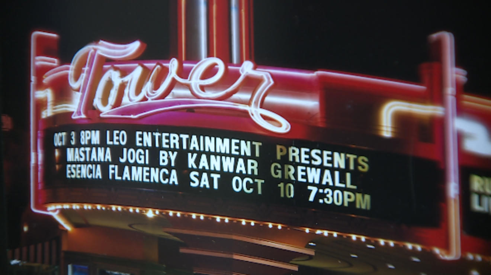
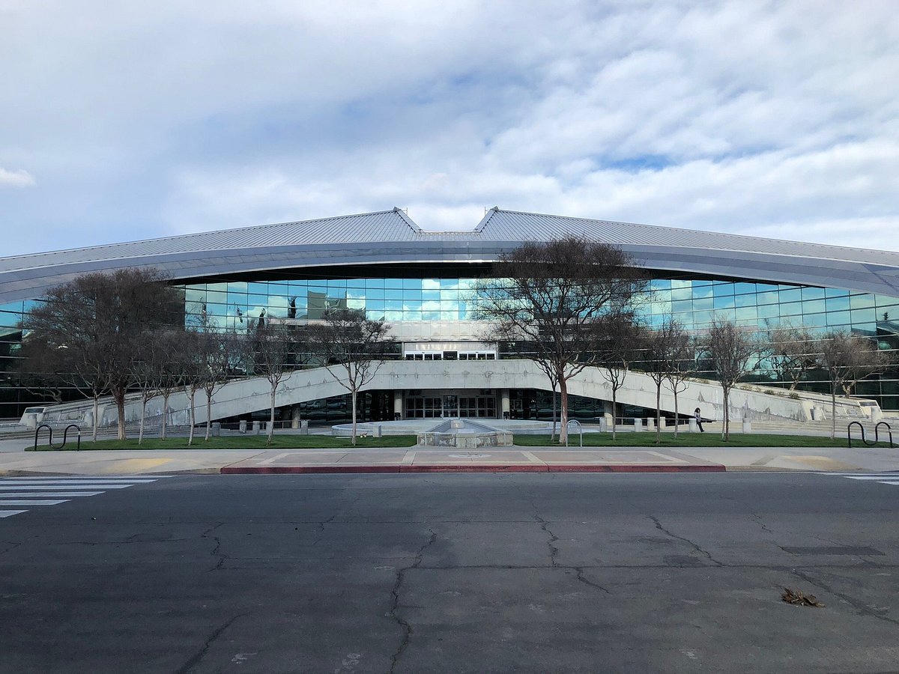
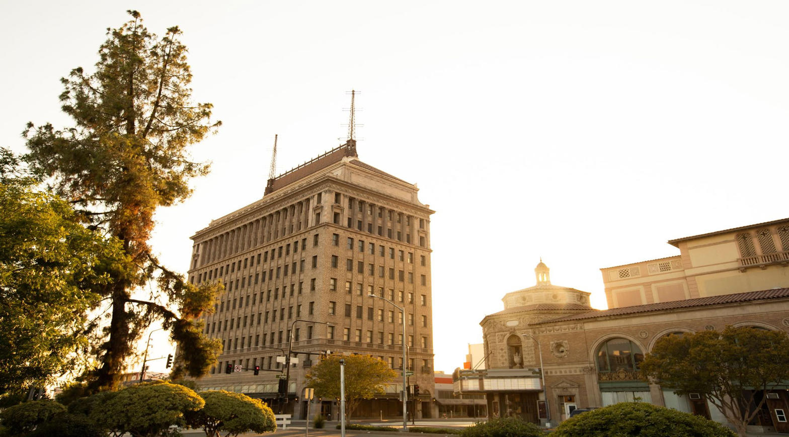
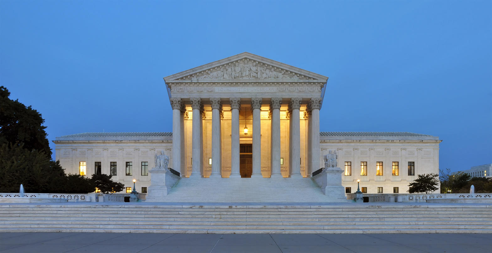

In the name of the Father, and of the Son, and of the Holy Spirit. Amen.
We are tired this week, and tired people mash words. A district attorney is not the FBI. A letter is not a tape. A chyron is not a verdict. A twelve-month forecast is not a finished year. A president saying a thing will not happen is not the same as the thing being impossible. The Lord is not tired. He still requires the categories.
Numbers 23:19
God is not a man, so he does not lie. He is not human, so he does not change his mind. Has he ever spoken and failed to act? Has he ever promised and not carried it through?
That is the Father. He does not need spin. He does not bless spin. Enlightened fact, if it is fact, is already His. He does not ask a preacher to thicken a rumor so the crowd will stay.
John 14:6
Jesus told him, “I am the way, the truth, and the life. No one can come to the Father except through me.”
That is the Son. He does not say He is a take. He does not say He is a brand. He is the truth. Every other claim in this city has to stand under that light or fall.
John 16:13
When the Spirit of truth comes, he will guide you into all truth. He will not speak on his own but will tell you what he has heard.
That is the Spirit. He guides. He does not invent. He does not need a secret overlay to finish a sentence God has not finished. Blessed fact is not the same as blessed heat.

Keep four drawers. Do not pour them into one bucket.
Fact is what can be shown: a date, a filing, a dollar amount on a public form, a charge that names a defendant, a denial spoken in public, a building you can walk to.
Allegation is a claim that has not been proved. It may be true. It may be revenge. It may be both. It is still an allegation until two or three witnesses and a lawful finding.
Suggestion is the soft cousin. Appears. May have. Knew more than we knew. Could take the internet in twelve months. Will not happen. Suggestion wants you to live in the conclusion without doing the work.
Spin is the polish. SECRET VIDEO. Negative forces. Whoever wins AI wins. Spin is allegation wearing makeup.
Exodus 20:16
You must not testify falsely against your neighbor.
Leviticus 19:15-16
Do not twist justice in legal matters by favoring the poor or being partial to the rich and powerful. Always judge people fairly. Do not spread slanderous gossip among your people.
Deuteronomy 19:15
You must not convict anyone of a crime on the testimony of only one witness. The facts of the case must be established by the testimony of two or three witnesses.
Proverbs 18:17
The first to speak in court sounds right until the cross-examination begins.

This week the street is full of examples. Treat them as examples of speech, not as a second trial.
In Ireland a lab chief said a swarm of agents could take down the internet in as little as twelve months. That is a warning. It is also a forecast. The same week a president called hard questions a negative force and said the concern would not happen. That is a contrary forecast. Neither sentence is John 14:6. One may prove wiser. Neither is finished history. A machine that stacks dates can help a clerk. It cannot baptize a guess.
In California a May 9, 2024 letter from Mario Juarez to Attorney General Rob Bonta is a real document. Bonta’s campaign says he received it and sent it to law enforcement. The letter alleges a compromising recording and other crimes in an Oakland donor network. Bonta has publicly denied that any such video exists. The federal case that does exist names other people. They have pleaded not guilty. Bonta has not been charged. A reporter said the letter appears to have sped up an FBI investigation. Hear the word. Appears. Campaign legal bills in the hundreds of thousands of dollars are on the public forms. That spend is a fact. The meaning of the spend is still argued. A news chyron that turns the letter into a secret tape is spin. A tired mouth that says district attorney when the file is federal is a mistake. Correct the mouth. Do not build a doctrine on the mistake.

Isaiah 5:20
What sorrow for those who say that evil is good and good is evil, that dark is light and light is dark, that bitter is sweet and sweet is bitter.
Spin lives in that verse. It calls an allegation a conviction because the tribe is hungry. It calls a forecast a creed because the industry is hungry. It calls a denial a cover because the clip is hungry. The opposite spin calls every hard question a stunt because the office is hungry. Both hungers are idols.
John 8:32
And you will know the truth, and the truth will set you free.
Freedom is not the first speaker. Freedom is not the first chyron. Freedom is not the first model that sorted the calendar. Freedom is the truth, and the truth has a name.

Ephesians 5:11-13
Take no part in the worthless deeds of evil and darkness; instead, expose them. It is shameful even to talk about the things that ungodly people do in secret. But their evil intentions will be exposed when the light shines on them.
Expose. Do not invent. If a hidden thing is real, the light will have it. If a hidden thing is a campaign story, the cross-examination will have it. Your job is not to finish God’s work with a hotter noun.
James 1:19
Understand this, my dear brothers and sisters: You must all be quick to listen, slow to speak, and slow to get angry.
Luke 8:17
For all that is secret will eventually be brought into the open, and everything that is concealed will be brought to light and made known to all.
How then do we walk, under the Trinity, while we wait?
Honor the Father by refusing to lie for a side. He does not lie. You may not lie for Him, and you may not lie against a neighbor in His name.
Honor the Son by measuring every claim against the Truth who has a body and a cross, not against a tribe. Jesus is not a forecast. He is not a leak. He is not a model.
Honor the Spirit by letting Him guide you into what is so. Quick to listen. Slow to speak. If you misspoke, correct it in the same room. That is repentance, not weakness.
Name the letter as a letter. Name the denial as a denial. Name the charged as charged. Name the uncharged as uncharged. Name a forecast as a forecast. Leave the rest on the desk of the lawful file and on the desk of God.
Micah 6:8
No, O people, the Lord has told you what is good, and this is what he requires of you: to do what is right, to love mercy, and to walk humbly with your God.
Do what is right with the mouth. Love mercy toward the person still waiting for a verdict. Walk humbly, which means you will not announce that you have already won the future or already finished the trial.
Spin is not light. Suggestion is not Scripture. Allegation is not a sentence from the bench. The Father, the Son, and the Holy Spirit do not need your heat. They already have the truth. Stay free.
2 Corinthians 3:17
For the Lord is the Spirit, and wherever the Spirit of the Lord is, there is freedom.
Sources
- ABC7 News I-Team, Dan Noyes, November 21, 2025. Letter dated May 9, 2024 from Mario Juarez to Attorney General Rob Bonta. Campaign confirmation that the letter was received and forwarded. On-air statement that Bonta has not been charged and that there is no indication he is a suspect. Reporter inference that the letter “appears to have sped up” the FBI investigation.
- East Bay Insiders, Steve Tavares, November 20, 2025. First publication of the letter. Description of Juarez as despondent and seeking retribution.
- Public remarks by Attorney General Bonta denying the existence of the alleged recording.
- Federal Oakland bribery case charging Sheng Thao, Andre Jones, David Duong, and Andy Duong. All have pleaded not guilty. Bonta is not a named defendant in those charges.
- Campaign-finance reporting of legal fees paid to Wilson Sonsini in connection with FBI contact. FPPC treatment of a later complaint.
- Reuters and related wire reports, September 2026, on an Anthropic researcher’s twelve-month internet-risk warning and the presidential reply that such concerns “will not happen.”
Photographs
- Tower Theatre marquee, Fresno. News photograph of the public facade.
- Fresno City Hall exterior. Public civic building.
- Pacific Southwest Building and Warnors Theatre, Fulton Street. City of Fresno public image.
- Supreme Court of the United States. Wikimedia photograph of the public building.
- United States Capitol and National Mall. Public aerial photograph.